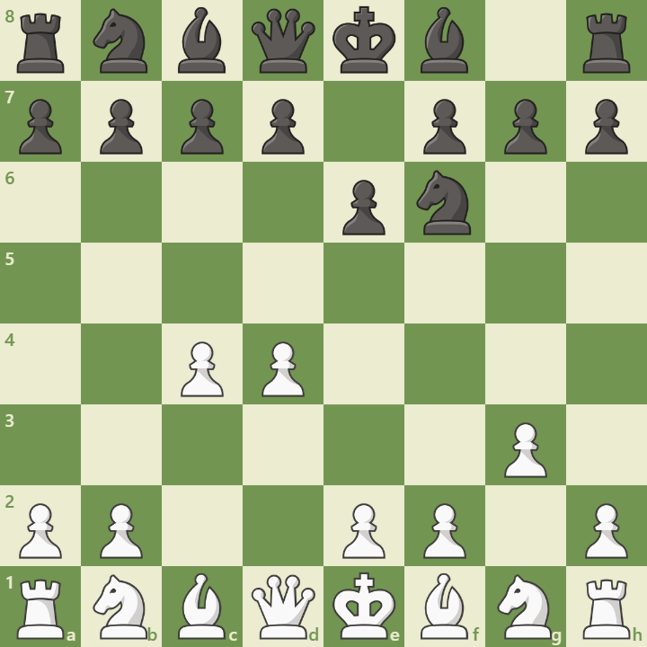

Overview
The Catalan Opening blends positional control with long-range pressure. It begins with:
1. d4 Nf6 2. c4 e6 3. g3
White fianchettos the bishop and aims for central dominance and queenside expansion. It’s a favorite of elite players like Kramnik and Carlsen.
Opening Diagram
This position arises after 3.g3, preparing Bg2 and long-term pressure on the center.
Main Variations
- Open Catalan: ...dxc4 – dynamic pawn play
- Closed Catalan: ...Be7 – solid setup
- Early ...c5: counterplay in the center
Strategic Themes
- Fianchetto pressure on long diagonals
- Central control with d4 and e3
- Queenside expansion and positional squeeze